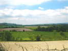
Je fais la route tranquille, comme d'hab, le Vexin Français est vraiment une région qui me plaît...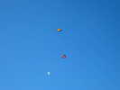
Arrivée fin d'après-midi, grand ciel bleu, déjà quelques fanatiques en l'air, Damien Debril n'habite pas loin, évidemment ! Vent de terre, et derrière le gros immeuble, ça turbule à grande échelle...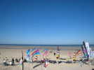
Dominique Miquet a préparé une surface de compétition circulaire, ça s'entraîne déjà...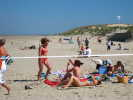
Samedi matin, toujours grand beau et suffisamment chaud pour que les baigneuses s'exposent au soleil...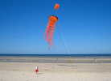
Ce chevelu produit et monte des cerfs-volants innombrables, gonflables évidemment...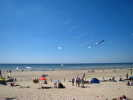
Les Pirates sont bien là et font leur show habituel de Nasas... Les Gwenn ne sont pas très nombreux, le fils de William a l'appendicite...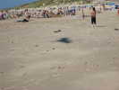
Avec la chaleur, la plage est accueillante... Je fais voler ma grue, la preuve...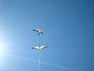
Bon, je vous la montre quand même, en compagnie dune jolie sterne à la queue fourchue...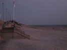
Le soir tombe sur l'immense plage de Stella commune à toutes les autres stations de la Côte d'Opale !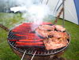
Petite soirée au camping avec les Pirates. Tout le monde n'est pas au même camping (ils nous connaissent ?) mais on se regroupe...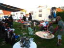
Pirates et char-à-cerf-volantistes peut-être, mais y a pas que des tentes de bohêmes...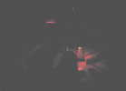
Avec la nuit, fi des moyens d'éclairage sophistiqués, la lanterne et la bougie, c'est la meilleure ambiance...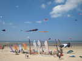
Au matin, les Hurricane sont arrivés et ont monté leurs bannières et banderoles diverses...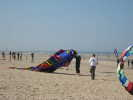
Ils mettent en l'air leur grande chenille qui vole bien, même sans porteur...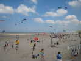
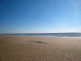
Le vent est monté, je change de monture, cette fois, l'ombre est plus grande (6 m)...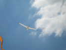
Je vais essayer de faire voler quelque temps l'Albatros 2 plutôt que le 1. Mais il est moins stable et je n'ai pas encore trouvé les bons réglages, sauf par vent moyen-faible...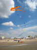
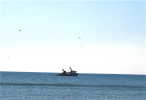
Nos activités ludiques ne troublent pas les pêcheurs qui continuent à sortir puis à traîner leurs filets le long de la côte !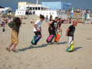
Les compétitions terminées, Dominique organise une course en sac à plusieurs manches, avec handicaps...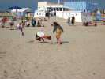
A l'arrivée, c'est Marco qui l'emporte d'une courte tête grâce à un plongeon décisif !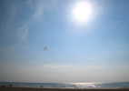
Dans le grand soleil, on assiste encore à un beau numéro de dual : un seul pilote, deux cerfs-volants et un ruban !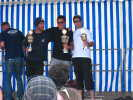
Remise des prix : Richard Debray, Champion de tout, dont du Monde, est cette fois troisième et sourit mollement !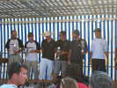
Pour les Paires, trois équipes qui finiront : 1ère, 2ème et 3ème évidemment... Richard est encore dans la mauvaise !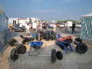
Au soir, les charistes font une pyramide de tous leurs engins pour les attacher ensemble !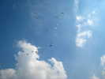
Le lendemain, on pourra aussi admirer cette belle prestation du Mégateam qui montera à 19 participants, mais pas très longtemps...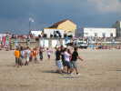
Dès le décollage, au sol il faut se remuer, avancer, reculer, se placer !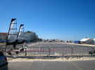
Sur la promenade, un espace fermé a été aménagé pour permettre les essais de sail-kart, un machin démontable et transportable dans une valise (une grosse...) !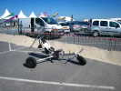
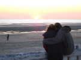
Au soir, un coucher de soleil romantique avec deux amants exaltés dans les bras l'un de l'autre...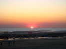
Voilà, une belle journée de plus se termine en beauté...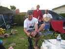
Retour chez les Pirates, les armes blanches sortent de leurs fourreaux, attention, même si c'est pour se gratter les pieds !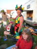
Tout auréolé de sa victoire (mais si, la course en sac), Marco a sorti son accoutrement de comédie...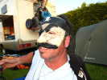
Et, plus simplement, un masque pour Jean-Mi...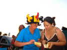
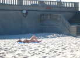
Lundi matin (hé oui, le festival dure 3 jours à la Pentecôte), soleil de rigueur et à 9 h, déjà de belles bronzeuses en position !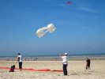
Michel Haquette sort son Quentin modifié, bois et coton, dont il a remplacé les caissons triangulaires par une boîte posée en diagonale ! Très actif, il sort 7 ou 8 cerfs-volants dans la journée !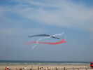
Beaucoup de décorations aussi, comme ce tourniquet original et décoratif !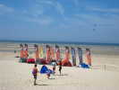
Autour de l'arène de compétition, les pilotables ont monté leurs camps, mais cette fois, juste pour le fun...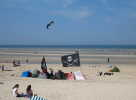
Les Pirates sont venus en force et du coup, leur village occupe, lui aussi une belle place...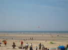
Sur la plage découverte, les chars s'en donnent à coeur-joie, chars à voiles de l'école locale ou chars à cerfs-volants...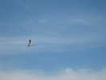